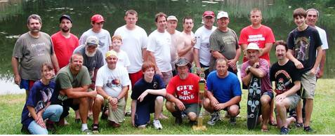

This years Nationals was held Camp Conron Holmes, NY and was a great Nationals! The Axis won big but the Allies did win the first battle of Nats! The sides were pretty even in numbers of ships but the Axis shot better and most of the sinks were on the Allied side.
Weather was great and the temperatures were in the 80's all week with the evenings cool enough that A/C was not needed by the campers and people who stayed at the lodge. The only rain storm was a duesy but came right after the battle in the ring and everyone was finished battling and most had cleaned up and packed the boats away.
This year, the campaigns were held on Tuesday 2nd battle and Wed. morning which seemed to limit the one on ones to some extent. Campaign was good but the Axis had a great many more convoy ships than the Allied forces (a clear message to the Allies to start a building campaign. the Final Score was Axis 94850 Allied 67055

International R/C Warship Combat Club, Inc.
Keeping Ponds Safe since 1978
Nationals Report 2006
July 23 - 28, 2006